封面主图
待替换为基地实拍
待替换为基地实拍

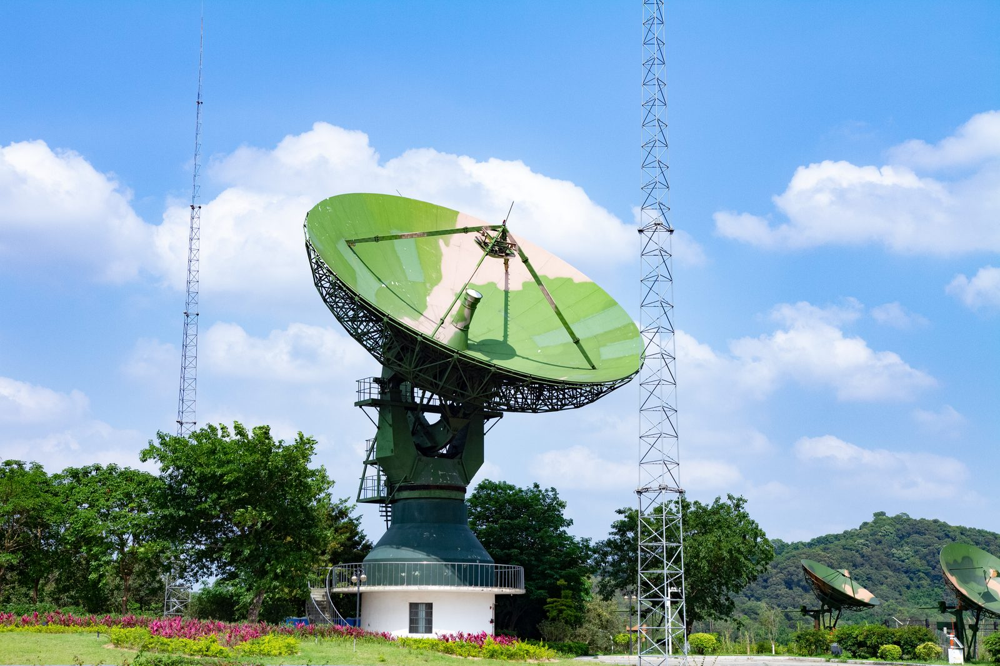


AI太空基地·南粤航空航天科技创新研究院，是面向全国青少年的航空航天科普研学基地，专注将「航天精神」与「科学教育」融为一体。基地位于广州黄埔区天麓湖附近，远离市中心，山水环绕、空气清新；依托广州刀锋智能科技股份有限公司等高新技术企业成立。
由国家卫星气象中心、中国航天科技集团旗下科研院所、中国卫星导航定位协会、中国宇航学会、广东省气象局、广州气象卫星地面站等单位指导建设，孙家栋院士、何质彬院士等数十位院士专家倾力支持；并与广州气象卫星地面站共建航天科普馆、无人机体验室、沉浸式 VR 体验中心、科技课室等功能室。
以「在青少年心中种下航天梦的种子」为使命，AI太空基地与国防教育基地双基地并行——一翼指向浩瀚宇宙，一翼扎根家国大地，致力于打造中国领先的航空航天科普教育和娱乐研学基地。
从国家部委到区级单位，基地已获得 17 项科普与研学相关资质；以下展示的是其中部分牌匾与证书实物。
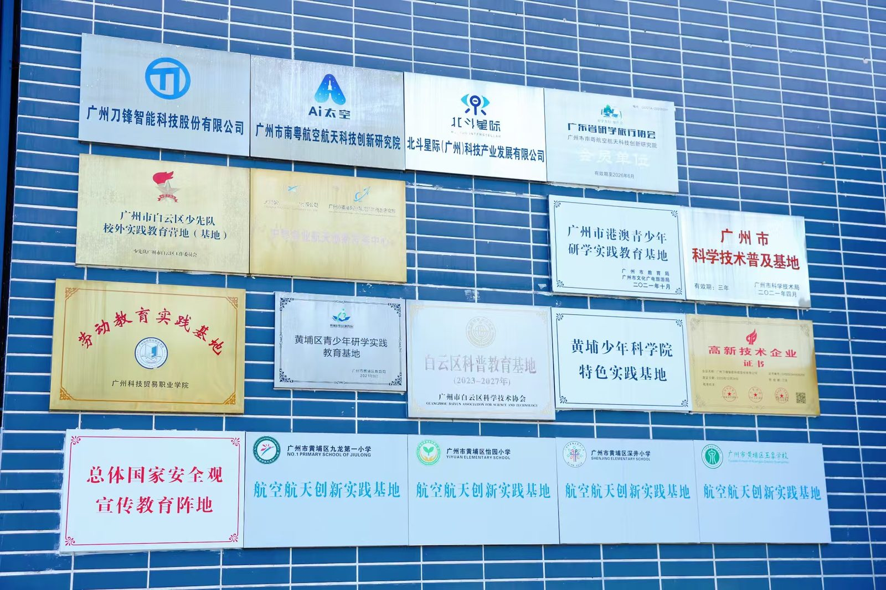
动静结合、室内室外联动的沉浸式研学动线，「看、听、玩、做」一体。
36 门精品研学课程，覆盖小学到高中全学段
28 位一线研学导师，全程带队讲解
200 亩基地占地，位于广州黄埔区天麓湖附近
6000 ㎡使用面积，场馆功能齐备
1200 名青少年可同时开展研学活动
10万+ 累计科普教育人数，覆盖全国青少年
气象卫星地面站、航天科普馆、沉浸式 VR 体验中心、无人机室、真人CS 战场、月面无人探测课室、多功能报告厅……基地内 13 个场馆功能齐备。
中国四大气象卫星地面站之一的广州气象卫星地面站，实地了解气象卫星发展史与初代地面监测设备；静止轨道与极地轨道天线塔实景，区分两种轨道接收模式，感受大国重器。

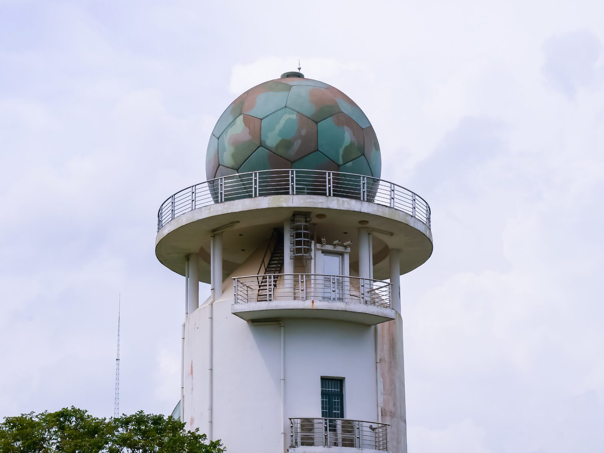

馆内设九大展区：卫星苍穹、北斗矩阵、箭指深空、月球基地、火星使命、天宫之镜、共和国的脊梁、飞天战袍、精神图腾，中国航天知识全景呈现，感受航天科研探索精神。
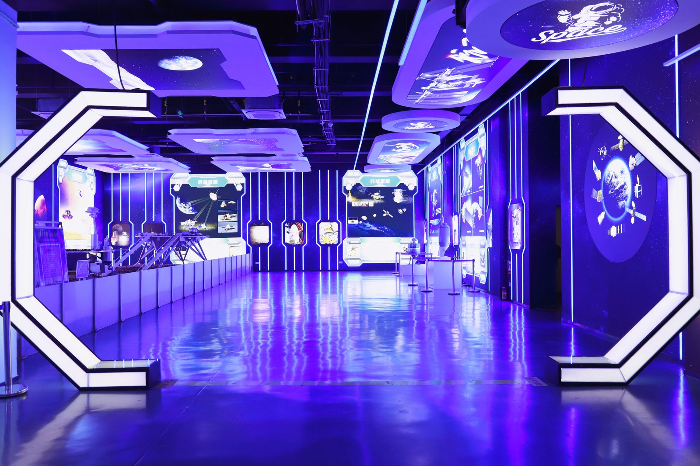
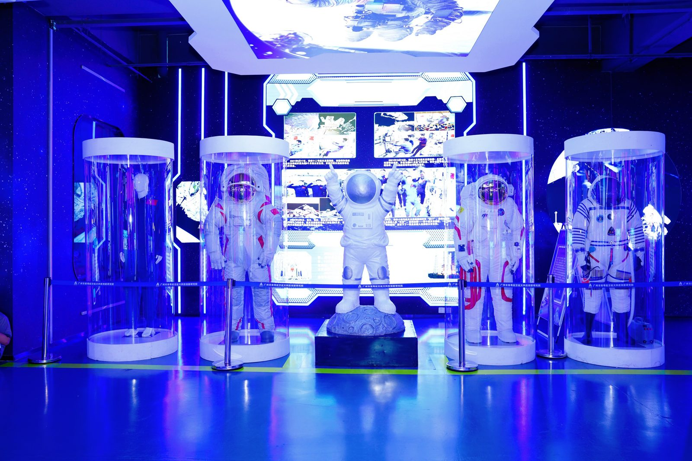
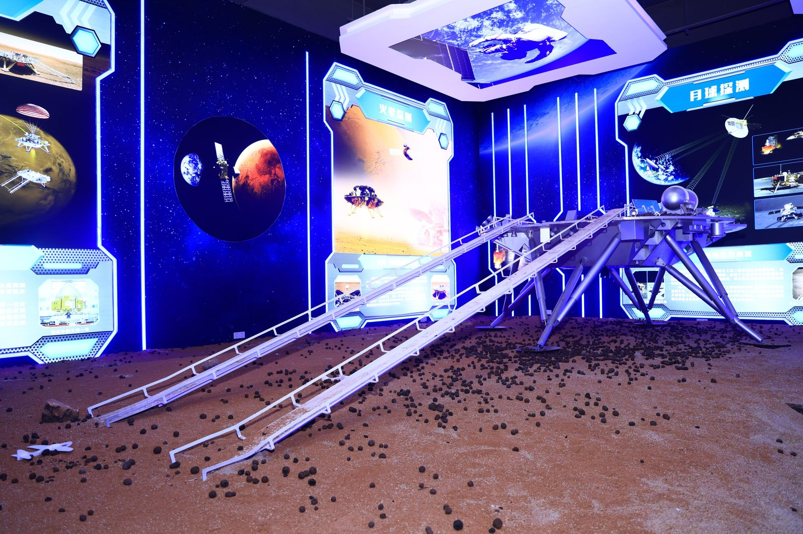
VR 火箭升空、月球探索、星际穿越，让宇宙在眼前展开，唤醒每位学员的科学梦想。
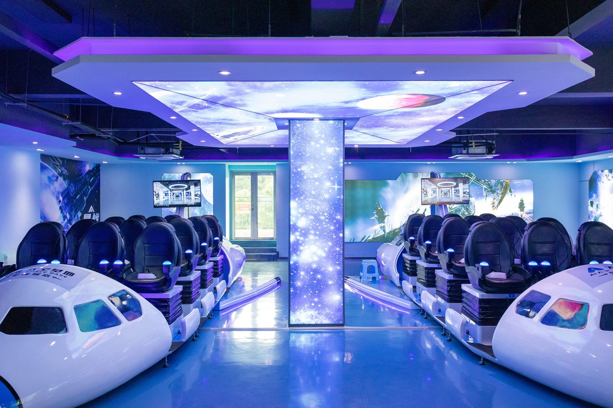
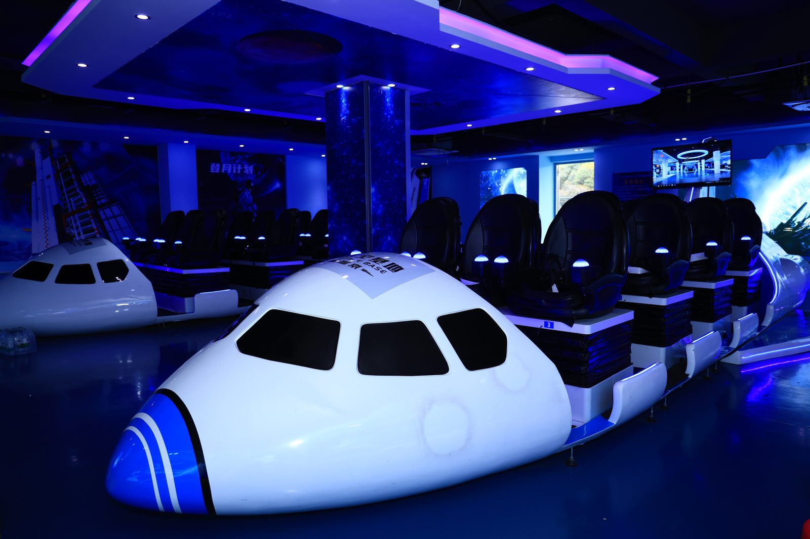
从飞行原理讲解到模拟飞行、无人机足球，动态与静态结合，带来「训练—操控—竞技」全流程体验，配有电脑模拟驾驶舱，从零开始安全上手。
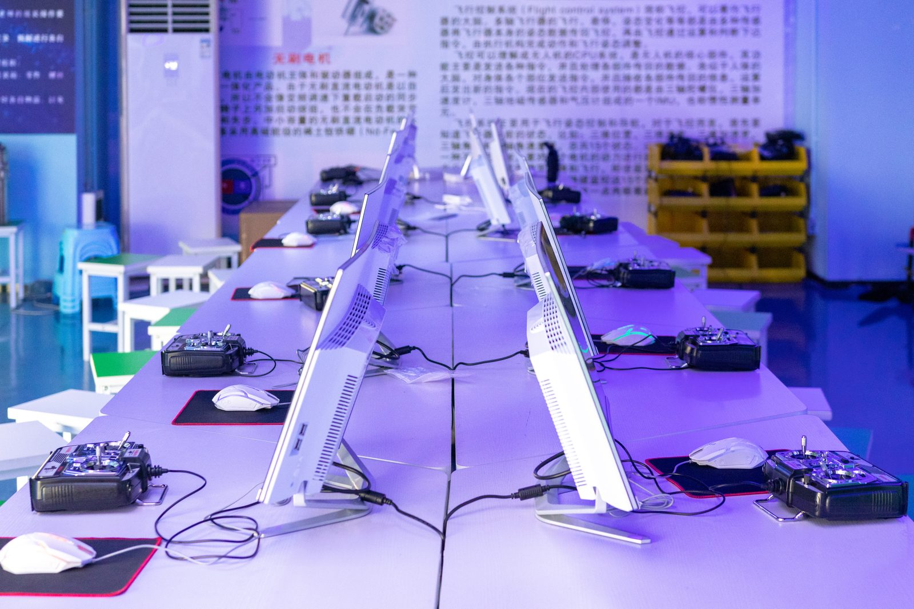
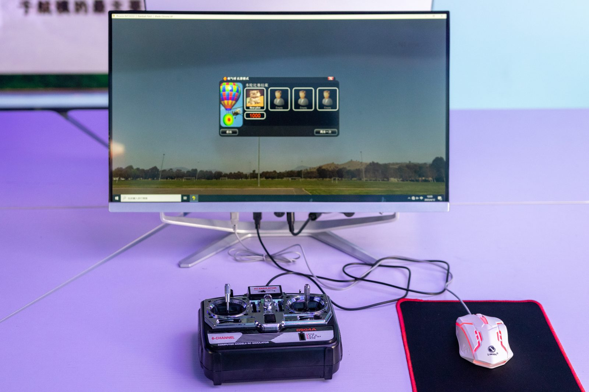

依托户外野战区打造真人CS 对抗战场，模拟军事作战场景，在掩体、战术与团队配合中锤炼勇气、策略与协作精神。
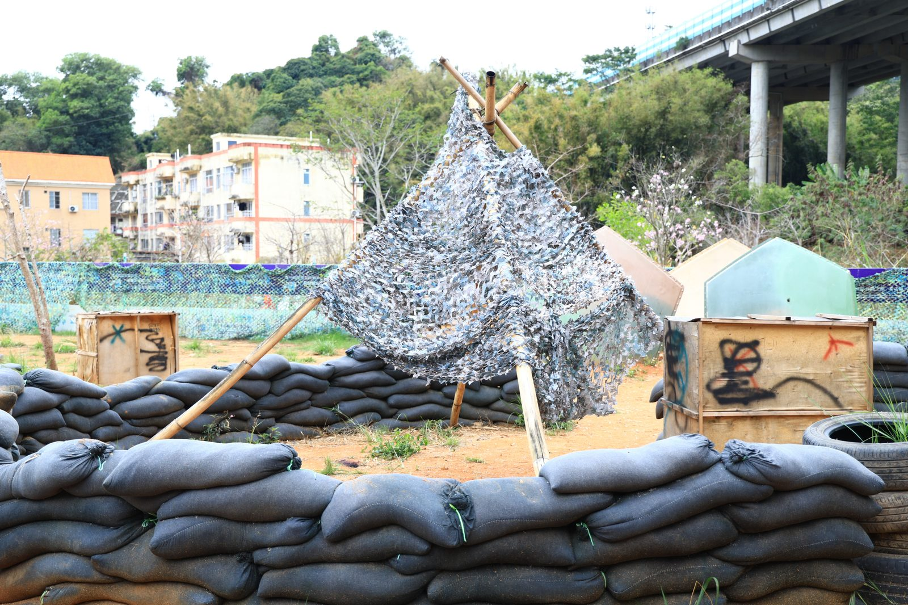
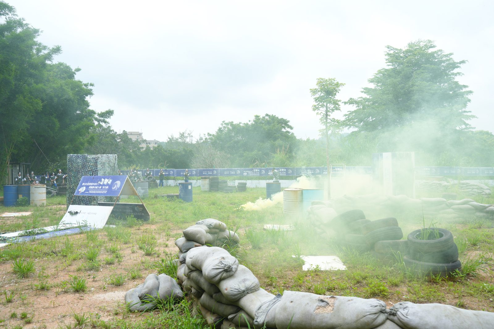

月面地形模拟场地与月球车编组实操，学习无人探测与路径规划，体验「嫦娥」式月面勘察的科学与乐趣。

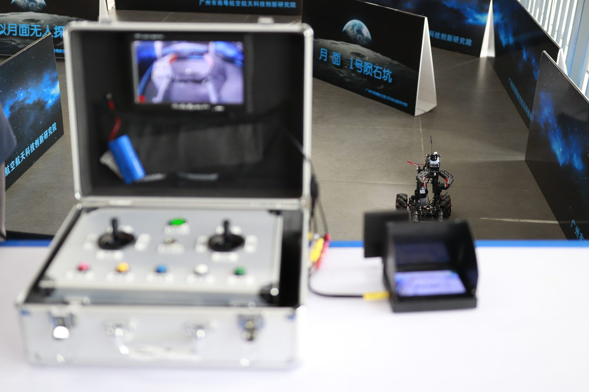
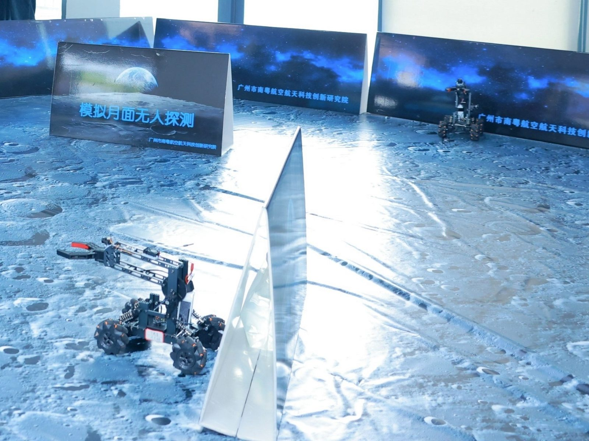
航天科普讲座、手工创作工坊、团队建设活动等多功能场地，可灵活布置，承接各类汇报、亲子研学与集体拓展。


星际迷航太空餐厅提供主题餐饮，户外广场适合大型集结与亲子活动，太空营地可露营观星、夜宿太空主题房，畅享沉浸式航天体验。


36 门课程围绕航天科普、航空操控、航天工程、人工智能、军事拓展、团队协作六大主题展开，把知识讲解、动手实践与团队任务串联成一次完整体验。
课程由一线研学导师带队，在真实场馆与户外场景中完成：先在展陈与教具前讲清原理，再由学员动手制作、实际操控，最后在团队任务中把学到的东西用起来。六大主题可按需自由组合，配套成半日、一日或多日的研学方案，学校与家长可以按参与人数、时长和目标灵活搭配。
走进航天科普馆与气象卫星地面站，看模型、看展陈、看真实天线群，把中国航天事业的来路讲明白。
从电动纸飞机、手抛飞机启蒙，到无人机模拟飞行与无人机足球，零风险起步，逐步上手真实操控。
手持北斗定位设备在户外来一场科技寻宝，再亲手制作并发射水火箭，把工程原理变成看得见的升空。
认识前沿 AI，学习基础编程，在项目实战中动手创作 AI 应用，理解身边的智慧生活与智慧城市。
在户外野战区开展真人 CS 对抗，制定并临场调整战术，锤炼勇气、策略与团队决策。
动力圈、同心鼓、珠行万里，在经典拓展项目中体会配合、节奏与共同目标的力量。
每一门课程均由一线研学导师带队，在真实场馆与户外场景中完成；其余定制课程可联系基地。
六张课程样卡，直观感受课程的形态与现场氛围。以下图片为占位，将由基地实拍替换。
课程不是坐在教室里听讲，而是走进场馆、戴上设备、亲手发射、实地搜索。
每一门课都有专属的场馆场景与动手环节。


学员在导师带领下参观航天科普馆的模型与展陈，沿「东方红一号—载人航天—探月」的线索梳理中国航天的发展脉络。课程说明运载火箭、卫星与飞船各自承担的功能，并留出自主观察与提问的时间。


学员佩戴头显进入设定场景，随火箭点火升空，在月面低重力环境中行走，并穿越星际空间。体验过程中导师提示观察重点，结束后围绕失重现象、月面地貌与火箭分离过程展开讨论。


课程在防护笼内分两队进行，学员各自操纵带护罩的无人机完成撞球与防守。除悬停与推进的操控练习外，还需商定进攻、补位与换人安排，学员在快节奏对抗中体会分工配合的作用。


学员以饮料瓶为箭体，装配尾翼、头锥与降落伞完成制作，小团全程动手，大团以发射环节为主。发射前讲解瓶内气压将水向下喷出、箭体因反作用力上冲的原理，随后进行发射并记录飞行表现。


课程在户外场地分组进行，学员使用手持北斗设备读取经纬度、判定方向，按给定坐标寻找隐藏目标点。搜寻过程中需核对自身位置、修正方位偏差，方位判读的准确度比移动速度更为重要。


课程从刷脸、语音助手、导航推荐等日常应用切入，再进入基础编程，由学员用图形化积木搭建可运行的小程序。课上说明机器如何从数据中归纳规律，并提示数据使用中需要注意的问题。
欢迎幼儿园、中小学、家委团体、教育机构预约研学行程，基地可根据学段定制课程组合。
联系我们获取课程排期与组合方案。课程咨询与报名请直接拨打下方电话，或扫描页脚二维码。
宋老师 13802751381·李老师 13660857959·董老师 13622868939
预约研学行程* 课程时长与价格信息待基地补充后同步更新